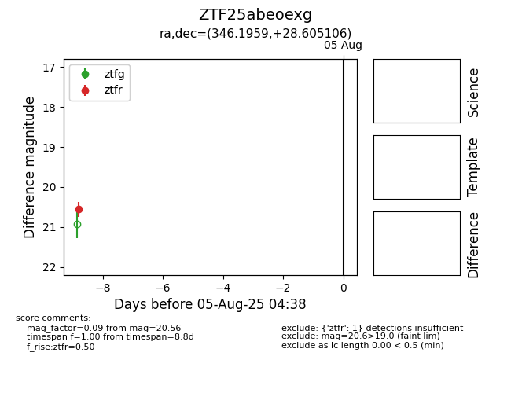

Target ZTF25abeoexg at 2025-08-05 04:38, see:
FINK: fink-portal.org/ZTF25abeoexg
Lasair: lasair-ztf.lsst.ac.uk/objects/ZTF25abeoexg
ALeRCE: alerce.online/object/ZTF25abeoexg
alt names
ZTF25abeoexg (ztf,fink)
coordinates:
equatorial (ra, dec) = (346.1959,+28.60511)
galactic (l, b) = (96.2472,-28.68234)
photometry
last ztfr=20.56
1 ztfr detections
